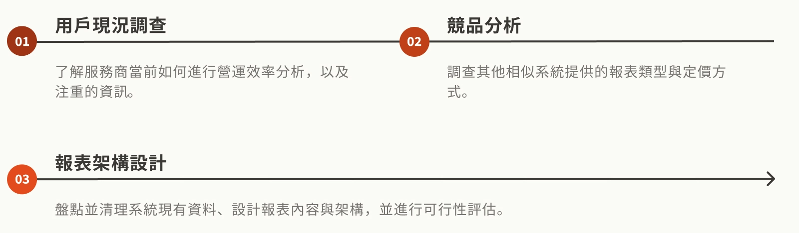
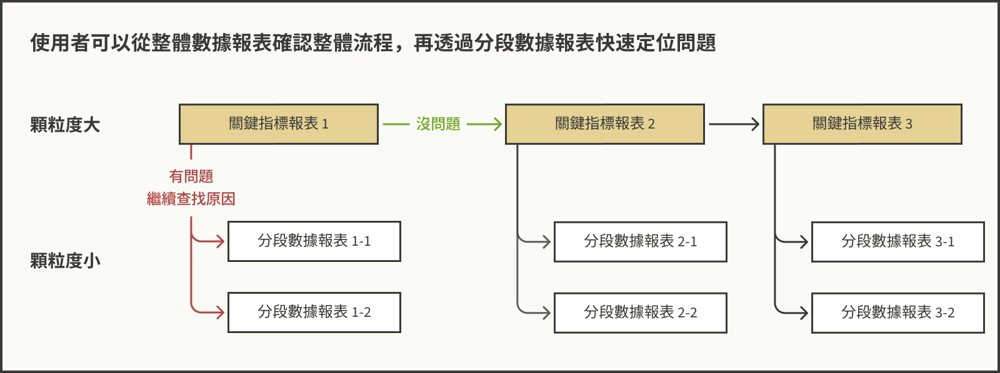

Purpose
了解客戶需求與系統資料限制，設計能協助客戶提升其營運效率的商業分析報表，並結合商業模式吸引客戶訂閱軟體進階方案。
Challenge
系統中模組類型與資料多樣，且資料尚未經過盤點與可行性評估。需重新盤點既有資料並評估新增其他報表所需資料的可行性。
Production
6 大分類、共 36 個商業分析報表。並依照資料分析顆粒度，分成基礎與進階報表分屬不同軟體收費方案。
Outcome
對客戶進行提案，預計以人工生成報表的方式進行前期測試。
Purpose
了解客戶需求與系統資料限制，設計能協助客戶提升其營運效率的商業分析報表，並結合商業模式吸引客戶訂閱軟體進階方案。
Challenge
系統中模組類型與資料多樣，且資料尚未經過盤點與可行性評估。需重新盤點既有資料並評估新增其他報表所需資料的可行性。
Production
6 大分類、共 36 個商業分析報表。並依照資料分析顆粒度，分成基礎與進階報表分屬不同軟體收費方案。
Outcome
對客戶進行提案，預計以人工生成報表的方式進行前期測試。
本專案已簽署 NDA，無法於公開平台展示專案細節。

KeepWell 是一個為 PRC 醫療器材所開發的清消與租賃流程管理 SaaS 系統，搭配專為醫療器材所設計的 QRcode 資產追蹤標籤，提供歐洲的醫療器材服務商進行場內器材庫存、清消、訂單、物流、客戶… 等完整服務流程的數位化管理。此軟體當前主要服務出租醫療氣墊床的服務商。
KeepWell 希望提供給客戶的最大價值為協助其找出服務流程中的瓶頸，進而提升其效率。透過密集的資產追蹤時間點，KeepWell 理應能從不同流程的處理時間、產品通過某節點的流量、各醫院的租賃趨勢… 等不同的角度，以產品序號級別的顆粒度，提供服務商如服務效率、需求預測… 等洞察，協助其提升營運效率，增加營收



吸引客戶訂閱軟體進階方案以提升訂閱費收入。

增加軟體訂閱方案的差異化，提高訂閱進階方案的誘因。

確保使用者可以從報表快速定位問題，找出流程瓶頸並針對性地提升營運效率。
確保使用者不會迷失於眾多報表中
報表依照顆粒度大小分為兩類：

根據服務商在意的「耗材 / 維修成本」和「產品利用率」，挑選 KeepWell 中 5 個與之相關的模組，並加上「個別員工效率分析」一共 6 大類、36 份報表。

在競品調查的過程中，我們發現有些系統雖然提供了大量報表與數據視圖，但缺乏明確的層級與邏輯關聯，導致使用者在閱讀時容易迷失於各式圖表之中，難以快速判斷哪些資訊對決策真正有價值。報表看似豐富卻無法轉化為具體行動。
在客戶現況調查中也瞭解到，服務商會優先從會計帳目中聚焦關鍵指標（例如：營收），以此判斷是否需要進一步追查背後原因。這說明了「提供明確的結構與行動指引」比單純展示數據更為關鍵。因此好的報表設計不僅應呈現資訊，更要清楚指示決策方向。